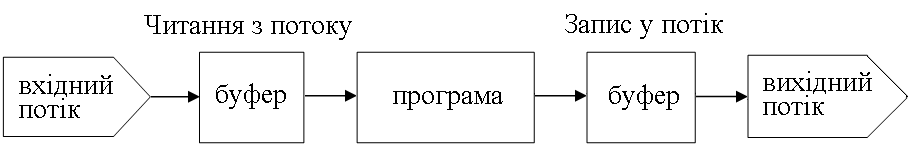

Теоретичні відомості¶
Потоки й файли¶
Система уведення-виведення мови С підтримує інтерфейс, що не залежить від використовуваного фізичного пристрою уведення-виведення. Іншими словами, мова С підтримує абстрактний рівень між програмістом і фізичним пристроєм. Цю абстракцію називають потік. Незважаючи на те, що пристрої можуть бути різні (термінал, дисководи тощо), стандарт ANSI мови С пов’язує кожний із пристроїв із логічним пристроєм — потоком. Оскільки потоки не залежать від фізичних пристроїв, одна й та сама функція може як записувати інформацію на диск, так і виводити її на екран, принтер.
Спосіб зберігання інформації на фізичному пристрої називають файл. Із погляду програміста, під файлом розуміють деяку пойменовану сукупність даних, яка перебуває на зовнішньому пристрої та має певні атрибути (характеристики). Файл — це такий самий об’єкт програми, як і будь-який інший, але різниця полягає в тому, що дані файлу знаходяться не в оперативній пам’яті, а поза нею. Таким чином, файл є довготривалим «сховищем» даних поза програмою.
Кожний потік, пов’язаний із файлом, має керуючу структуру, яку називають FILE. Її описано в заголовковому файлі stdio.h.
Мова С допускає файли двох різновидів:
текстові (text) — складаються з послідовності символів, розбитих на рядки. Для стандартного поділу на рядки використовують символ «новий рядок», який у файлі подано двома символами
'\n'(новий рядок) і'\r'(повернення каретки). Рядки у файлі є послідовностями непробільних символів. Пробільними, крім символу «пробіл», є також символи'\n','\r','\t'(горизонтальна табуляція),'\v'(вертикальна табуляція),'\f'(переведення сторінки). У текстовому файлі зберігають тільки символи, тобто якщо у файлі записано12345, то це не ціле число 12345, що займає 4 байти, а 5 символів'1','2','3','4','5', що разом займають 5 байтів. Під час читання з файлу цю послідовність може бути, звісно, перетворено в число будь-якого з типівdouble,int,char,long;двійкові (binary) — складаються з послідовності байтів, між якими немає розділювачів. Якщо в бінарному файлі трапляється байт із кодом керуючого символу «нового рядка», то він спеціального призначення не має й розглядається так само, як і решта байтів файлу. Якщо в бінарний файл записати від’ємне ціле число
-12345, то воно запишеться у файл у додатковому коді, у якому в пам’яті комп’ютера подають від’ємні числа. Таке число займатиме 4 байти. Під час читання файлу це число непотрібно перетворювати, як у випадку з текстовим файлом. Якщо ж записати в бінарний файл послідовність символів"-12345", то вона займатиме 6 байтів.
Послідовність дій з опрацювання файлу стандартизована:
Спочатку файл, як і будь-який інший об’єкт програми, потрібно описати.
Потім файл потрібно відкрити, установивши зв’язок користувацької програми з зовнішнім носієм даних. За допомогою оператора відкриття файлу з ним буде пов’язано відповідний потік. Щойно файл відкрито, між ним і програмою можна передавати інформацію.
Після цього слідує власне опрацювання файлу — запис у нього даних, сформованих у програмі, читання даних із файлу, низка інших операцій, пов’язаних, наприклад, із пошуком у файлі потрібних даних.
Завершуючи роботу з файлом, його потрібно закрити. Операція закриття файлу розриває його зв’язок із потоком.
Якщо потік було відкрито для виведення, то після виконання операції закриття файлу відповідний буфер пам’яті записується на зовнішній пристрій. Якщо програма завершила роботу нормально, то всі файли автоматично закриваються.
Усі операції уведення-виведення реалізують за допомогою функцій бібліотеки мови С. Бібліотека підтримує три рівні уведення-виведення:
потокове уведення-виведення;
уведення-виведення нижнього рівня;
уведення-виведення для консолі й портів (залежить від ОС). Його було розглянуто в попередніх роботах
Прототипи функцій уведення-виведення нижнього рівня містяться у файлі stdio.h. Цими функціями є:
fread()— читання буфера даних;fwrite()— запис у буфер даних;fopen()— відкриття файлу;fclose()— закриття файлу;fseek()— пошук певного байта у файлі.
На рівні потокового уведення-виведення обмін даними проводять побайтово. За одне звернення до пристрою (файлу) проводять зчитування або запис фіксованої порції даних (512 або 1024 байти). Можна казати, що потік — це файл разом із наданими засобами буферизації. Обмін із потоком для збільшення швидкості передачі даних проводять, як правило, через спеціальну область оперативної пам’яті — буфер. Буфер накопичує байти, а фактична передача даних виконується після його заповнення. Під час уведення з диску або зчитування з файлу дані поміщають у буфер, а потім побайтово або порціями передають у програму користувача. Це дає можливість виправити помилки, якщо дані з буфера ще не відправлено в програму (рисунок 8.1). Під час виведення у файл дані накопичують у буфері, а у випадку його заповнення записують їх у вигляді єдиного блока на диск. Функції бібліотеки мови С, які підтримують обмін даними на рівні потоку, дають змогу опрацьовувати дані різних розмірів і форматів.

Рисунок 8.1 — Схема передачі інформації між потоком, буфером і програмою
Під час роботи з потоком можна:
відкривати й закривати потоки (пов’язувати вказівники на потоки з конкретними файлами);
уводити й виводити рядки, символи, відформатовані дані, порцію даних довільної довжини;
аналізувати помилки уведення-виведення й досягнення кінця файлу;
керувати буферизацією потоку й розміром буфера;
одержувати й установлювати вказівник поточної позиції у файлі.
Функції бібліотеки уведення-виведення містяться в заголовковому файлі stdio.h.
Відкриття та закриття потоку¶
Для початку роботи з потоком його треба відкрити. При цьому потік зв’язується зі структурою типу FILE, визначення якої міститься в бібліотековому файлі stdio.h. У структурі знаходяться вказівник на буфер, указівник на поточну позицію файлу тощо. Після відкриття потоку повертається вказівник на нього, тобто на об’єкт типу FILE:
#include <stdio.h>;
//...
FILE* fp;
//...
fp = fopen("t.txt", "r");
де fopen(<ім’я файлу>, <режим відкриття>) — функція для ініціалізації файлу.
Режими відкриття файлу наведено в таблиці 8.1.
Потік можна відкрити в текстовому (t) або бінарному (b) режимах. За замовчуванням використовують текстовий режим. Явно режим указують у такий спосіб: "r + b" (або "rb") — бінарний режим для читання.
Таблиця 8.1 – Перелік режимів відкриття файлу
Режим |
Опис режиму |
|---|---|
|
Файл відкрито для читання. Якщо файлу не існує, видається помилка під час виконання програми. |
|
Файл відкрито для запису. Якщо файлу не існує, його буде створено, якщо файл існує, уся інформація з нього стирається. |
|
Файл відкрито для додавання. Якщо файлу не існує, його буде створено, якщо файл існує, інформація з нього не стирається, можна виконати запис у кінець файлу. |
|
Файл відкрито для читання й запису, змінити розмір файлу не можна. Якщо файлу не існує, видається помилка під час виконання програми. |
|
Файл відкрито для читання й запису. Якщо файлу не існує, його буде створено, якщо файл існує, уся інформація з нього стирається. |
|
Файл відкрито для читання й запису. Якщо файлу не існує, його буде створено, якщо файл існує, інформація з нього не стирається, можна виконати запис у кінець файлу. |
У файлі stdio.h визначено константу EOF (від’ємне ціле число), яка є ознакою кінця файлу.
Під час відкриття потоку можуть виникати такі помилки:
файл, пов’язаний із потоком, не знайдено (для читання з файлу);
диск заповнено (під час запису);
диск захищено від запису (під час запису);
інше.
У цих випадках указівник на потік набуває значення NULL. Для виведення повідомлення про помилку під час відкриття потоку використовують стандартну бібліотекову функцію
void perror(const char* s);
з файлу stdio.h, як показано в наступному прикладі.
Приклад 8.1¶
#include <stdio.h>
#include <stdlib.h>
int main(void)
{
FILE* fp;
if ((fp = fopen("t.txt", "r")) == NULL)
{
/*виводить рядок із повідомленням про помилку*/
perror("Помилка під час відкриття файлу!");
exit(0);
}
}
Після роботи з файлом його потрібно закрити за допомогою функції
fclose(указівник_на_потік);
Коли програма починає виконуватися, автоматично відкриваються декілька потоків, основними з яких є такі:
стандартний потік уведення (
stdin);стандартний потік виведення (
stdout);стандартний потік виведення про помилки (
stderr).
За замовчуванням потоку stdin відповідає клавіатура, а потокам stdout і stderr — монітор.
Для уведення-виведення за допомогою стандартних потоків використовують такі функції:
getchar(),putchar()— уведення-виведення окремого символу;gets(),puts()— уведення-виведення рядка;scanf(),printf()— форматоване уведення-виведення.
Основні функції для роботи з файлами¶
Аналогічно роботі зі стандартними потоками виконують уведення-виведення в потоки, пов’язані з файлами.
Для символьного уведення-виведення використовують такі функції:
int fgetc(FILE* fp)
де fp — указівник на потік, із якого виконують зчитування. Функція повертає з потоку fp черговий символ у форматі int. Якщо символ неможливо прочитати, повертається значення EOF;
int fputc(int c, FILE* fp)
де fp — указівник на потік, у який виконують запис; c — змінна типу int, у якій міститься символ, який записують у потік. Функція повертає записаний у потік fp символ у форматі int. Якщо символ неможливо записати, повертається значення EOF.
Для порядкóвого уведення-виведення використовують такі функції:
char* fgets(char* s, int n, FILE* fp)
де char* s — адреса, за якою розміщують зчитувані байти; int n — кількість зчитуваних байтів; FILE* fp — указівник на файл, із якого здійснюють зчитування. Приймання байтів закінчується після передачі n-1 байтів або у випадку одержання керуючого символу '\n', який також передається в приймаючий рядок. У будь-якому випадку рядок закінчується символом '\0'. За успішного завершення роботи функція повертає вказівник на прочитаний рядок, неуспішного — 0;
int fputs(char* s, FILE* fp)
де char* s — адреса, із якої беруть байти, що записують у файл; FILE* fp — указівник на файл, у який виконують запис. При цьому символ кінця рядка ('\0') у файл не записують. За успішного завершення роботи функція повертає невід’ємне число, неуспішного — EOF.
Для блокового уведення-виведення використовують такі функції:
int fread(void* ptr, int size, int n, FILE* fp)
де void* ptr — указівник на область пам’яті, у якій розміщують зчитані з файлу дані; int size — розмір одного зчитаного елемента; int n — кількість зчитуваних елементів; FILE* fp — указівник на файл, із якого здійснюють зчитування. За успішного завершення роботи функція повертає кількість зчитаних елементів, неуспішного — EOF;
int fwrite(void* ptr, int size, int n, FILE* fp)
де void* ptr — указівник на область пам’яті, у якій розміщують дані для запису у файл; int size — розмір одного записуваного елемента; int n — кількість записуваних елементів; FILE* fp — указівник на файл, у який виконують запис. За успішного завершення роботи функція повертає кількість записаних елементів, неуспішного — EOF.
Функції fwrite() і fread() зручно використовувати для збереження у файл даних структури.
У деяких випадках інформацію зручно записувати у файл без перетворення, тобто в символьному вигляді, придатному для безпосереднього відображення на екран. Для цього можна використовувати функції форматованого уведення-виведення:
int fprintf(FILE* fp, const char* fmt, ...)
де FILE* fp — указівник на файл, у який виконують запис; const char* fmt — форматний рядок; ... — список змінних, які записують у файл. Функція повертає число записаних символів;
int fscanf(FILE* fp, const char* fmt, par1, par2, ...)
де FILE* fp — указівник на файл, із якого здійснюють зчитування; const char* fmt — форматний рядок; par1, par2, ... — список змінних, у які заноситься інформація з файлу. Функція повертає число змінних, яким присвоєно значення.
Засоби прямого доступу дають можливість переміщувати вказівник поточної позиції в потоці на потрібний байт. Для цього використовують таку функцію:
int fseek(FILE* fp, long off, int org);
де
FILE* fp— указівник на файл;long off— позиція зміщення;int org— початок відліку.
Зміщення задають виразом чи змінною. Зміщення може бути від’ємним, тобто можливе переміщення як у прямому, так і у зворотному напрямках. Початок відліку задають однією з визначених у файлі stdio.h констант:
SEEK_SET == 0— початок файлу;SEEK_CUR == 1— поточна позиція;SEEK_END == 2— кінець файлу.
Функція fseek() повертає 0, якщо переміщення в потоці успішно виконано, інакше вона повертає ненульове значення.
Для роботи з файлами зручно використовувати такі функції:
long ftell(FILE* fp)— повертає поточну позицію у файлі (номер байта);int feof(FILE* fp)— функція для визначення кінця файлу.
Робота з текстовими файлами¶
Перед початком роботи з файлом його потрібно відкрити за допомогою функції fopen(), синтаксис якої описано вище. Розгляньмо послідовність дій зі створення простого текстового файлу мовою C та запису в нього текстової інформації.
Приклад 8.2¶
#include <stdio.h>
#include <string.h>
int main(void)
{
char str_file[] = "Рядок для файлу";
FILE* fp = fopen("my_file.txt", "w");
if (fp != NULL)
{
printf("Відбувається запис у файл...\n");
for(int i = 0; i < strlen(str_file); i++)
putc(str_file[i], fp);
fclose(fp);
}
else
printf("Неможливо відкрити файл на запис.");
return 0;
}
У прикладі задано вказівник fp типу FILE, який ініціалізує функція fopen(). Функція fopen() як перший аргумент приймає рядок, у якому задано шлях до файлу. Другий параметр визначає спосіб опрацювання файлу. У прикладі — це значення "w", яке означає відкриття файлу на запис із видаленням із нього всієї колишньої інформації. Якщо файл відкрито успішно, указівник fp не дорівнюватиме NULL, і з ним можлива робота. У цьому випадку за допомогою функції putc() виконується запис символів у файл, на який указує вказівник fp. Перед завершенням програми відкритий файл потрібно закрити, щоб уникнути втрати даних у ньому. Це досягається функцією fclose(), яка приймає вказівник на файл і повертає значення 0 за успішного закриття файлу, або EOF — за неуспішного.
Розгляньмо тепер приклад програми зчитування інформації з файлу.
Приклад 8.3¶
#include <stdio.h>
int main(void)
{
char str_file[100];
FILE* fp = fopen("my_file.txt", "r");
if (fp != NULL) {
int i = 0;
char ch;
while((ch = getc(fp)) != EOF)
str_file[i++] = ch;
str_file[i] = '\0';
printf("%s\n", str_file);
fclose(fp);
}
else
printf("Неможливо відкрити файл на читання.");
return 0;
}
У наведеному лістингу функція fopen() відкриває файл на читання, що задає значення другого аргумента — "r". Це означає, що в нього неможливо здійснити запис даних, можливе тільки зчитування. Спочатку виконується цикл while, у якому з файлу за допомогою функції getc() зчитується символ та виконується перевірка: якщо зчитане значення не дорівнює символу кінця файлу EOF, то значення змінної ch записується в масив str_file. Цикл виконуватиметься доти, доки з файлу не буде прочитано всі символи, тобто доки не буде досягнуто символу EOF. Після завершення циклу формується рядок str_file, який виводить на екран функція printf(). Перед завершенням програми виконується функція закриття файлу fclose().
Робота з текстовими файлами через функції putc і getc не завжди зручна. Наприклад, часто потрібно записати або зчитати рядок повністю. Для цього можна скористатися функціями fputs() і fgets(). Розгляньмо попередні приклади, у яких використано ці функції.
Приклад 8.4¶
#include <stdio.h>
int main(void)
{
char str_file[] = "Рядок для файлу";
FILE* fp = fopen("my_file.txt", "w");
if(fp != NULL) {
fputs(str_file, fp);
fclose(fp);
}
else
printf("Неможливо відкрити файл на запис.");
fp = fopen("my_file.txt", "r");
if(fp != NULL) {
fgets(str_file, sizeof(str_file), fp);
printf("%s\n", str_file);
fclose(fp);
}
return 0;
}
Аналогічні дії з запису даних у файл і зчитування інформації з нього можна виконати за допомогою функцій fprintf() і fscanf(), які дають велику гнучкість в опрацюванні даних файлу. Продемонструймо це на прикладі.
Приклад 8.5¶
Нехай є структура, яка зберігає таку інформацію про книжки: назва, автор, рік видання. Потрібно написати програму збереження цієї інформації в текстовий файл і її зчитування.
#include <stdio.h>
#define N 2
struct tag_book
{
char name[100];
char author[100];
int year;
} books[N];
int main(void)
{
for(int i = 0; i < N; i++) {
scanf("%s", books[i].name);
scanf("%s", books[i].author);
scanf("%d", &books[i].year);
}
printf("You entered:\n");
for (int i = 0; i < N; i++) {
puts(books[i].name);
puts(books[i].author);
printf("%d\n", books[i].year);
}
FILE* fp = fopen("my_file.txt", "w");
for (int i = 0; i < N; i++)
fprintf(fp, "%s %s %d\n", books[i].name, books[i].author, books[i].year);
fclose(fp);
fp = fopen("my_file.txt", "r");
for (int i = 0; i < N; i++)
fscanf(fp, "%s %s %d\n", books[i].name, books[i].author, &books[i].year);
fclose(fp);
printf("----------------------------------\n");
for(int i = 0; i < N; i++)
{
puts(books[i].name);
puts(books[i].author);
printf("%d\n", books[i].year);
}
return 0;
}
Під час виконання цієї програми користувач уводить інформацію про книжки в масив структур books. Уведену інформацію виводять на екран. Після цього відкривається на запис файл my_file.txt, у який заносять інформацію про книжки в такому порядку: найменування, автор, рік видання. Оскільки число книжок у прикладі дорівнює 2, то вихідний файл міститиме 2 рядки. Після цього файл my_file.txt відкривають на читання й за допомогою функції scanf() здійснюють зчитування інформації в елементи структури. На завершення зчитану інформацію виводять на екран монітора.
Наведений приклад показує можливість структурованого запису інформації у файл і її зчитування. Це дає змогу відносно просто зберігати різнорідні дані у файлі для їх дальшого використання в програмах.
Уважний розгляд попередніх прикладів дає можливість помітити, що функції зчитування інформації з файлу «знають», із якої позиції варто зчитувати чергову порцію даних. Так, в останньому прикладі функція fscanf() «знає», що спочатку потрібно зчитати з файлу перший рядок, потім другий і т.д. Програмісту немає потреби задавати позицію для зчитування даних, усе відбувається автоматично.
Це відбувається тому, що будь-який відкритий файл у програмі мовою С має вказівник позиції, із якої здійснюють зчитування даних. Під час відкриття файлу на читання цей указівник указує на початок файлу. Тому функція fscanf(), викликана вперше, зчитує дані першого рядка. По мірі зчитування інформації з файлу позиція зсувається на число зчитаних символів. Функція fscanf(), викликана вдруге, працюватиме з другим рядком у файлі.
Незважаючи на те, що вказівник позиції у файлі переміщається автоматично, у мові С можна програмно керувати положенням позиції у файлі за допомогою функцій fseek() і ftell(), описаних вище. Розгляньмо дію цих функцій на прикладі зчитування символів із файлу у зворотному порядку.
Приклад 8.6¶
#include <stdio.h>
int main(void)
{
FILE* fp = fopen("my_file.txt", "w");
if (fp != NULL) {
fprintf(fp, "Приклад використання функцій fseek and ftell.");
fclose(fp);
}
fp = fopen("my_file.txt", "r");
if (fp != NULL) {
char ch;
fseek(fp, 0L, SEEK_END);
long length = ftell(fp);
printf("length = %ld\n", length);
for (int i = 1; i <= length; i++) {
fseek(fp, -i, SEEK_END);
ch = getc(fp);
putchar(ch);
}
fclose(fp);
}
return 0;
}
У прикладі спочатку створюють файл, у який записують рядок "Приклад використання функцій fseek and ftell.". Потім цей файл відкривають на читання, і за допомогою функції fseek(fp, 0L, SEEK_END) указівник позиції переміщують на кінець файлу (за рахунок установлення прапорця SEEK_END). У результаті функція ftell(fp) поверне число символів у відкритому файлі. Далі функція fseek(fp, -i, SEEK_END) у циклі зміщує вказівник позиції на -i символів відносно кінця файлу, після чого функція getc() зчитує символ, який стоїть на i-й позиції з кінця. Оскільки змінна i пробігає значення від 1 до length, на екран буде виведено символи з файлу у зворотному порядку.
Робота з бінарними файлами¶
В усіх розглянутих вище прикладах функція fopen() у режимах "r" та "w" відкриває текстовий файл на читання й запис, відповідно. Це означає, що деякі символи форматування тексту, наприклад, повернення каретки '\r', не можна зчитати як окремі символи: їх ніби не існує у файлі, хоча насправді вони там є.
Для «тоншої» роботи з умістом файлів існує бінарний режим, який подає вміст файлу як послідовність байтів, у якій керуючі коди є просто числами. У цьому режимі можливе видалення та додавання керуючих символів, недоступне в текстовому режимі. Продемонструймо особливості опрацювання бінарного файлу на прикладі підрахунку у файлі числа керуючих символів повернення каретки '\r'.
Приклад 8.7¶
#include <stdio.h>
int main(void)
{
FILE* fp = fopen("my_file.txt", "w");
if (fp != NULL) {
fprintf(fp, "Приклад\n із\n файлом.");
fclose(fp);
}
char ch;
int cnt = 0;
fp = fopen("my_file.txt", "r");
if (fp != NULL) {
while ((ch = getc(fp)) != EOF)
if (ch == '\r' || ch == '\n')
cnt++;
fclose(fp);
}
printf("Текстовий файл: кількість = %d\n", cnt);
cnt = 0;
fp = fopen("my_file.txt", "rb");
if (fp != NULL)
{
while ((ch = getc(fp)) != EOF)
if (ch == '\r' || ch == '\n')
cnt++;
fclose(fp);
}
printf("Бінарний файл: кількість = %d\n", cnt);
return 0;
}
Результат роботи програми такий:
Текстовий файл: кількість = 0
Бінарний файл: кількість = 2
Аналіз одержаного результату свідчить, що під час відкриття файлу в текстовому режимі, функція getc() не зчитує символи повернення каретки '\r' а в бінарному режимі всі символи доступні.
Ще однією особливістю текстового формату файлу є запис чисел у вигляді тексту. У попередніх прикладах, коли виконувався запис числа у файл за допомогою функції printf() (наприклад, року видання книжки), то воно замінювалося на рядок. А коли рядок зчитувався за допомогою функції fscanf(), то він перетворювався назад у число.
Для компактного подання інформації у файлі числа доцільно зберігати як числа, а не як рядки. При цьому доречно використовувати бінарний режим доступу до файлу, оскільки в такому випадку будь-яке число сприйматиметься не як керуючий символ, а як число, і буде коректно зчитано з файлу.
Для роботи з бінарними файлами передбачено функції fread() і fwrite(). Розгляньмо приклад їх використання.
Приклад 8.8¶
#include <stdio.h>
int main(void)
{
FILE* fp;
char list[30];
int i, numread, numwritten;
if ((fp = fopen("fread.out", "wb")) != NULL)
{
for (i = 0; i < 26; i++)
list[i] = (char)('z' - i);
numwritten = fwrite(list, sizeof(char), 26, fp);
printf("Записано %d значень\n", numwritten);
fclose(fp);
}
else
printf("Помилка під час відкриття файлу!\n");
if ((fp = fopen("fread.out", "rb")) != NULL)
{
numread = fread(list, sizeof(char), 26, fp);
printf("Прочитано %d значень\n", numread);
printf("Уміст буфера: %.26s\n", list);
fclose(fp);
}
else
printf("Помилка під час відкриття файлу!\n");
return 0;
}
У прикладі масив list виступає буфером для виведення й уведення інформації з бінарного файлу. Спочатку елементи буфера ініціалізують літерами латинського алфавіту від z до a, а потім записують у файл за допомогою функції fwrite(list, sizeof(char), 26, fp). Тут оператор sizeof(char) дає розмір елемента (літери), а число 26 відповідає числу записуваних літер. Аналогічним чином здійснюють зчитування інформації з файлу fread(list, sizeof(char), 26, fp), де в масив list поміщаються 26 символів, які зберігають у файлі.
Функція fopen() під час відкриття файлу на запис знищує всі дані з нього. Щоб відкрити файл для додавання даних, не знищуючи раніше записаної інформації, третім аргументом функції fopen() потрібно задати "a" або "ab", що означає відкрити файл на додавання інформації в його кінець.
Коли стандартні функції повертають EOF, як правило це означає, що вони досягли кінця файлу. Проте, це також може означати помилку уведення інформації з файлу. Щоб розрізнити ці дві ситуації, у мові С існують функції feof() і ferror():
feof()повертає значення, відмінне від 0, якщо досягнуто кінець файлу, і 0 — в іншому випадку;ferror()повертає ненульове значення, якщо сталася помилка читання чи запису, і 0 — в іншому випадку.
Загальні принципи роботи з файлами записів¶
Розгляньмо основні принципи роботи з файлами, що містять записи структур деякого типу.
Спочатку потрібно за допомогою відповідної програми створити файл. У програмі повинно бути передбачено функцію додавання запису. Оскільки уведення запису з клавіатури як цілісності неможливо, кожне поле (якщо воно не структуроване) потрібно уводити окремо за запитом або заповнюючи екранну форму. Сформовану структуру записують у файл як цілісність.
Під час читання інформації з файлу читати запис ліпше як цілісність, а потім у програмі аналізувати вміст полів та виконувати потрібні дії.
Для зміни у файлі деякого запису після його прочитання потрібно змістити вказівник файлу на один запис назад, оскільки кожна операція читання-запису зміщує його автоматично. Потім змінені дані можна записувати. Розгляньмо декілька прикладів роботи з файлами записів.
Приклад 8.9¶
Скласти програму, яка виконує такі функції:
Створення нового файлу структур із такими полями:
назва товару;
ціна товару;
кількість товару;
перегляд файлу.
Додавання інформації в кінець файлу.
Пошук даних за назвою товару, зміна ціни й кількості.
Завдання потрібно виконати в окремих функціях. Для вибору функцій використовувати меню.
#include <stdio.h>
#include <string.h>
#include <stdlib.h>
struct good {
char name[10];
float c;
int count;
} t1;
void input(FILE*); /*створення нового файлу*/
void print(FILE*); /*перегляд файлу*/
void app(FILE*); /*додавання у файл*/
void find(FILE*); /*пошук та зміна*/
void clrscr() { system("clr||clear"); }
void flush() { while(getchar() != '\n'); }
int main(void)
{
char c;
FILE* fp;
while(1) {
clrscr();
puts("1 – Новий файл");
puts("2 – Перегляд файлу");
puts("3 – Додавання у файл");
puts("4 – Пошук та зміна");
puts("0 - Вихід");
c = getchar();
switch(c)
{
case '1': input(fp); break;
case '2': print(fp); break;
case '3': app(fp); break;
case '4': find(fp); break;
case '0': return 0;
default: puts("Неправильний режим!");
}
}
}
void input(FILE* fp)
{
char ch;
/*відкриття бінарного файлу для запису*/
fp = fopen("file1.dat", "wb");
clrscr();
printf("\nУведення товарів\n");
do
{
printf("\nНазва: ");
scanf("%s", t1.name);
printf("Ціна: ");
scanf("%f", &t1.c);
printf("Кількість: ");
scanf("%d", &t1.count);
/*запис у файл однієї структури t1*/
fwrite(&t1, sizeof(t1), 1, fp);
printf("\nЗавершити? y/n ");
flush();
ch = getch();
} while(ch != 'y');
fclose(fp);
}
void print(FILE* fp)
{
int i;
clrscr();
/*відкриття бінарного файлу для читання*/
fp = fopen("file1.dat", "rb");
i = 1;
/*читання з файлу однієї структури t1*/
fread(&t1, sizeof(t1), 1, fp);
while (!feof(fp)) {
printf("\n%3dНазва %10s Ціна %6.2f Кільк. %4d", i, t1.name, t1.c, t1.count);
fread(&t1, sizeof(t1), 1, fp);
i++;
}
flush();
getchar();
}
void app(FILE* fp)
{
char ch;
/*відкриття бінарного файлу для додавання*/
fp = fopen("file1.dat", "ab");
clrscr();
printf("\nУведення товарів\n");
do {
printf("\nНазва: ");
scanf("%s", t1.name);
printf("Ціна: ");
scanf("%f", &t1.c);
printf("Кількість: ");
scanf("%d", &t1.count);
fwrite(&t1, sizeof(t1), 1, fp);
printf("Завершити? y/n ");
flush();
ch = getch();
} while(ch != 'y');
fclose(fp);
}
void find(FILE* fp)
{
char c, good[10];
long int i;
/*відкриття бінарного файлу для читання й запису*/
fp = fopen("file1.dat", "rb+");
clrscr();
puts("Назва потрібного товару:");
gets(good);
fread(&t1, sizeof(t1), 1, fp);
while(!feof(fp)) {
if(strcmp(t1.name, good) == 0) {
printf("Назва %10s Ціна %6.2f Кільк. %d", t1.name, t1.c, t1.count);
printf("\nЗмінити? y/n ");
flush();
c = getchar();
if (c == 'y') {
printf("\nКількість: ");
scanf("%d", &t1.count);
printf("\nЦіна: ");
scanf("%f", &t1.c);
i = sizeof(t1);
/*повернення на sizeof(t1) байтів назад*/
fseek(fp, -i, 1);
/*запис зміненої структури на колишнє місце*/
fwrite(&t1, sizeof(t1), 1, fp);
}
}
fread(&t1, sizeof(t1), 1, fp);
}
fclose(fp);
}
Приклад 8.10¶
Програма для корекції існуючого файлу з результатами деякої олімпіади. Відповідна структура містить:
поле для назви країни;
масив із 3 чисел для медалей різного ґатунку.
У програмі спочатку визначають кількість записів у файлі за допомогою оригінальної функції та виводять результати у вигляді таблиці. Потім користувач може увести назву країни та відкоригувати дані. Якщо такої країни у файлі не знайдено, її додають у кінець файлу. Якщо користувач уведе замість назви країни мінус, процес корекції закінчується.
#include <stdio.h>
#include <stdlib.h>
#include <string.h>
void clrscr() { system("clr||clear"); }
char* medal[] = {"Gold", "Silver", "Bronze"};
typedef struct {
char name[16];
int res[3];
} sport;
long frecount(char* fn, int n)
{
/*визначення числа записів*/
FILE* fp;
long x;
if ((fp = fopen(fn, "rb")) == NULL) {
puts("Неможливо відкрити файл!");
exit(1);
}
fseek(fp, 0L, 2);
x = ftell(fp) / n;
fclose(fp);
return x;
}
void main()
{
clrscr();
sport s;
char mdf, country[16];
int p, x, mf;
FILE* fp;
long r, nr = frecount("ol.dat", sizeof(sport));
printf("Кількість записів у файлі: %lu\n", nr);
/*виведення записів у вигляді таблиці*/
printf("Країна Золото Срібло Бронза\n");
printf("----\n");
if ((fp = fopen("ol.dat","rb")) == NULL) {
puts("Неможливо відкрити файл!");
exit(1);
}
if (!feof(fp))
fread(&s, sizeof(s), 1, fp);
while (!feof(fp)) {
printf("%-15s", s.name);
for (int k = 0; k < 3; k++)
printf("%10d", s.res[k]);
printf("\n");
fread(&s, sizeof(s), 1, fp);
}
printf("-----\n");
fclose(fp);
/*корекція й додавання записів*/
if ((fp = fopen("ol.dat", "r+b")) == NULL) {
puts("Неможливо відкрити файл!");
exit(1);
}
do {
/*нескінченний цикл корекції*/
p = 0;
printf("Країна: ");
scanf("%15s", country);
if (country[0] == '-')
break; /*вихід із циклу корекції*/
rewind(fp);
if (!feof(fp))
fread(&s, sizeof(s), 1, fp);
while (!feof(fp)) {
/*цикл пошуку країни у файлі*/
if (strcmp(s.name, country) == 0) {
p = 1;
printf("%-15s", s.name);
for(int k = 0; k < 3; k++)
printf("%10d", s.res[k]);
printf("\n");
printf("Нові дані:\n");
for(int k = 0; k < 3; k++) {
printf("%s: ", medal[k]);
scanf("%d", &x);
s.res[k] = x;
}
fflush(fp);
r = ftell(fp);
rewind(fp);
fseek(fp, r - long(sizeof(s)), 1);
fwrite(&s, sizeof(s), 1, fp);
break;
}
fread(&s, sizeof(s), 1, fp);
}
if(!p) {
/*нова країна – додавання*/
printf("Країна: ");
printf("%-15s", country);
strcpy(s.name, country);
printf("Медалі:\n");
for(int k = 0; k < 3; k++) {
printf("%s: ", medal[k]);
scanf("%d", &x);
s.res[k] = x;
}
fseek(fp, 0L, 2);
fwrite(&s, sizeof(s), 1, fp);
}
} while(1);
printf("-----\n");
fclose(fp);
while (getchar() != "\n");
getch();
}
Приклад 8.11¶
Програма для організації запису рядка (символьного масиву) у файл блоком, а також читання й виведення на екран записаної інформації.
#include <stdio.h>
#include <string.h>
int main(void)
{
FILE* fp;
char msg[] = "це тест";
char buf[20];
if ((fp = fopen("DUMMY.FIL", "w+")) == NULL) {
puts("Помилка відкриття файлу!\n");
return;
}
/*запис рядка у файл*/
fwrite(msg, strlen(msg) + 1, 1, fp);
/*установка вказівника на початок файлу*/
fseek(fp, 0, SEEK_SET);
/*читання рядка з файлу*/
fread(buf, strlen(msg) + 1, 1, fp);
printf("%s\n", buf);
fclose(fp);
}
У цій програмі потік відкривають у режимі "w+" (створення для запису з послідовним читанням). Тому закривати файл під час запису не було потрібно.
У мові С також існують функції remove() і rename() для видалення й перейменування файлів, відповідно. Їхній синтаксис такий:
int remove(const char* path);
де *path — шлях з іменем файлу, який видаляють.
Цю функцію визначено в бібліотеці stdio.h, вона повертає 0 за успішного видалення та -1 — у протилежному випадку;
int rename(const char* oldn, const char* newn);
де
*oldn— ім’я файлу для перейменування;*newn— нове ім’я файлу.
Цю функцію визначено в бібліотеці stdio.h, вона повертає 0 за успішного перейменування, та ненульове значення — у протилежному випадку.